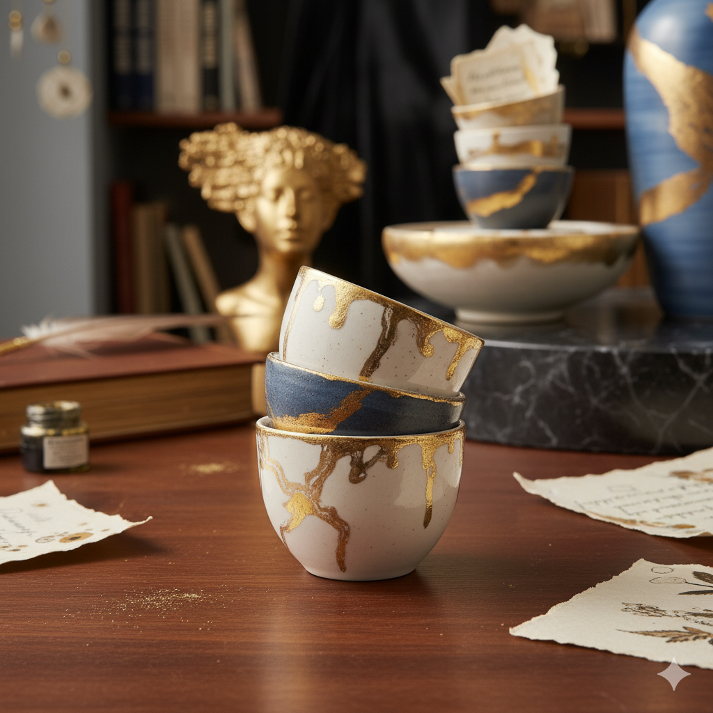

Monochrome Muse
Portrait study
Latest Creations
Portrait study

Stoneware forms

Studio series
Mixed media
About
Aufgewachsen zwischen alpinen Wiesen und pulsierendem Stadtlicht, verwebt Silvia rohe Texturen und warme Töne zu sinnlichen Objekten. Jedes Gefäß, jedes Gedicht und jede Fotografie lädt dazu ein, innezuhalten und die Poesie des Alltags neu zu entdecken.
Auf der Drehscheibe geformtes Steinzeug mit matten Glasuren, inspiriert von Flusskieseln, regendurchtränktem Boden und dem sanften Schimmer des Morgenlichts.
Leise Verse, verwoben mit Feldaufnahmen, Atem und Erinnerung - herausgegeben als limitierte Letterpress-Editionen.
Atmosphärische Fotografien, die Ritual, Wiederholung und die haptische Schönheit des Ateliers in Bewegung festhalten.